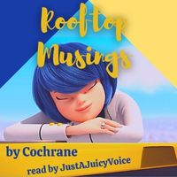

Podfic for Lucid by runicmagitek, a Fire Emblem: Three Houses fanfic.

Podfic for Rooftop Musings by Cochrane, a Miraculous Ladybug fanfic.
Chapter 1
Chapter 2
Chapter 3
Podfic for ‘Cause I’m a victim of this twisted fantasy and I’m addicted to the darker side of me by LifeOfMystery, a My Hero Academia fanfic.

Podfic for la petite mort by howlingmoonrise, a Dracula/Barbie fanfic.
This la petite mort podfic uses music and audio from others, attributed here:
"Dramatic Organ, B.wav" by InspectorJ (www.jshaw.co.uk) of Freesound.org used for starting and ending organ music (Bach's "Toccata and Fugue in D Minor").
Wind chime sound: "Rising windchimes pipechimes sample sound effect, better stereo for 2015!" by Paddy Uglow - CreativeMedia.org.uk https://www.creativemedia.org.uk/windchimes-samples/

Podfic for the chains they revere by gogollescent, a Revolutionary Girl Utena fanfic.